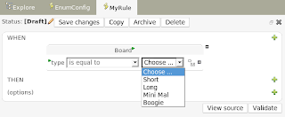

User configured chioce lists & 4.0.1 (Michael Neale)

These lists show up as drop downs (duh) in the guided editor. The lists are stored as assets themselves in the repository.
(below you will see what it looks like to setup some enumerations).
This means that the only valid values for the fact “Board” field called “type” are Short, Long, MM and Boogie (notice the use of the “=” to indicate that you want display a different value to what the rule really cares about). Note it is possible to have it call a bit of code that (for example) loads a list from the database (there is some info on that in the manual).
Also, a more arcane feature is the ability to filter or select what items get included when you build a package. This is something you have to setup on the server, but once it is setup you can enter the name of a “selector” configuration and only the selected items will be built (once again, more details are in the manual).
Finally, for those that have heard of JBoss Seam – Seam now can inject rulebases from the RuleAgent. This means you can configure the rule agent to load rules from the BRMS etc in the components.xml config. You can then do :
@In RuleBase ruleBase1;
And Seam will inject the rulebase from the agent configuration called “ruleBase1″.

{kind=link}
{kind=link}